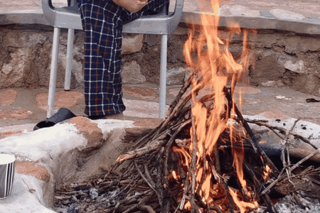
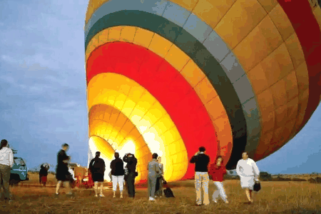

Under canvas
Retreat into the wild
Thoughtfully placed tents bring you closer to the colours, sounds, and gentle rhythm of the Mara.
Discover the tents

A DIFFERENT RHYTHM, IN THE HEART OF THE MARA
Welcome to Mara Green Heart — a safari camp in Kenya's Maasai Mara, where open skies, meaningful moments, and a warm welcome come together.

 OPEN SKIES
OPEN SKIESWELCOME TO MARA GREEN HEART
Some places are made to be explored. Others are made to be felt. Here, you can do both.
Set amid the landscapes of the Maasai Mara, Mara Green Heart offers a down-to-earth camp experience shaped by nature, unhurried days, and the people who bring this region to life. Wake to the sounds of the bush, gather over a meal, and watch the light change over the hills.
REST EASY, DREAM WILD
Simple comforts, natural textures, and the rare pleasure of being fully present.
Thoughtfully placed tents bring you closer to the colours, sounds, and gentle rhythm of the Mara.
Discover the tents
Calm, welcoming interiors and space to settle after a day outdoors.
See the spaces
Your front-row seat to the changing moods of the wilderness.
Ask about a stayTHE LANDSCAPE IS THE LUXURY
Endless sky above you. Wild country beyond you. The freedom to stop and simply take it all in.
See life at the campWANDER A LITTLE FURTHER
From a quiet sunrise to a day of discovery, make space for the experiences that matter to you.

Explore the famous Mara landscape and ask us about arranging a drive.

Learn about the traditions, stories, and living culture of the Maasai.

See the landscape from another perspective. Enquire for arrangements.

GO BEYOND THE ORDINARY
Nature walks, scenic viewpoints, slow mornings by the fire, and stories shared over a meal: sometimes the smallest moments become your favourites.
Explore all experiencesGOOD FOOD. GOOD STORIES.
A warm meal has a way of bringing everyone together. Our dining spaces and campfire setting invite you to slow down, share your adventures, and enjoy the evening.

A FEW MOMENTS IN MOTION
Scenes from camp life and Mara adventures, reimagined as gentle photo loops.


The quiet magic of coming together.

A little wonder before the day begins.
PICTURE YOURSELF HERE


GOOD TO KNOW
Every journey starts with a few questions. Here are some of the things guests often want to know.
Ask us anythingUse the enquiry form or contact our team on WhatsApp, by phone, or by email. Share your preferred dates and number of guests so we can confirm the available options.
Yes. Tell us which experiences interest you — such as a game drive, balloon safari, nature walk, or cultural encounter — and we can discuss what can be arranged and any additional charges.
Our photos show different tent layouts, including rooms with multiple beds. Contact us with your group size and needs so the team can confirm a suitable arrangement.
Please contact Mara Green Heart for up-to-date rates, inclusions, and availability. We do not publish unconfirmed prices on this website.
Comfortable walking shoes, a warm layer for cooler mornings and evenings, sun protection, and a camera are useful for a Mara stay. Ask the team for advice specific to your plans.
YOUR NEXT STORY STARTS HERE
One message is all it takes to start planning.